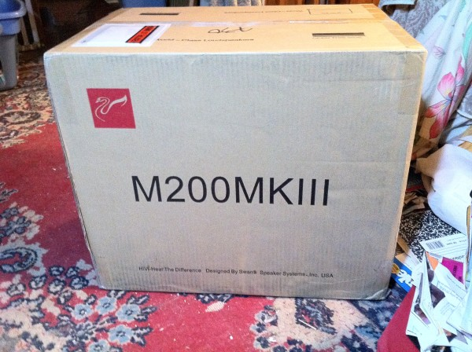
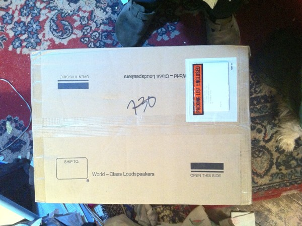
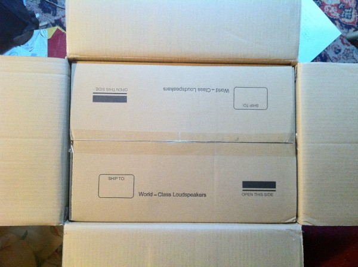
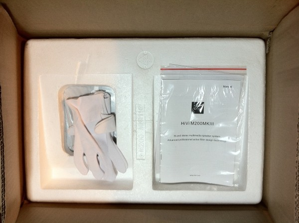
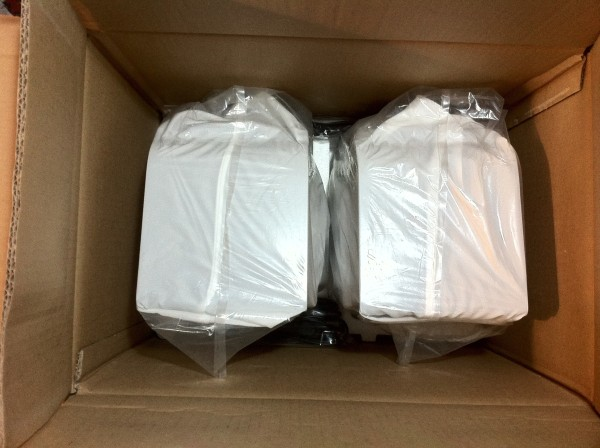
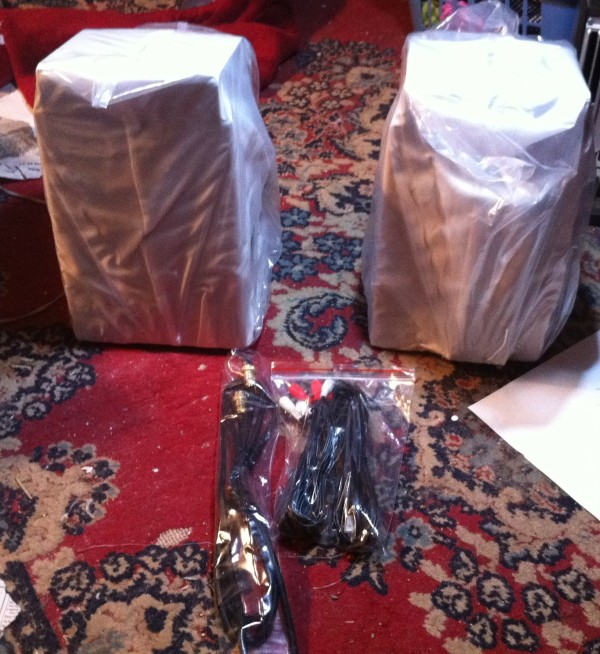
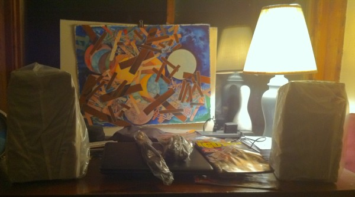
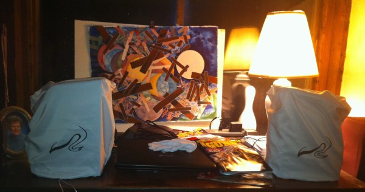
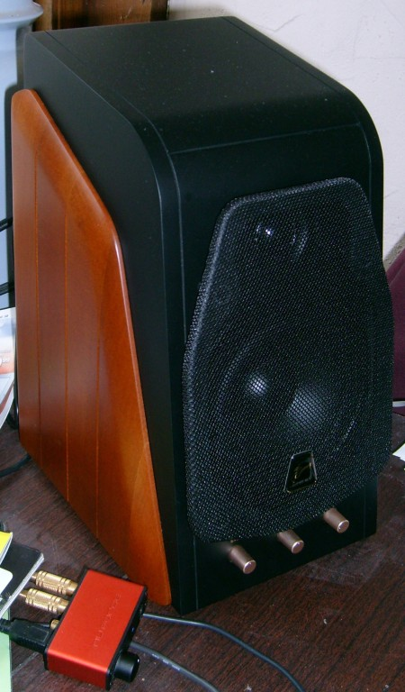
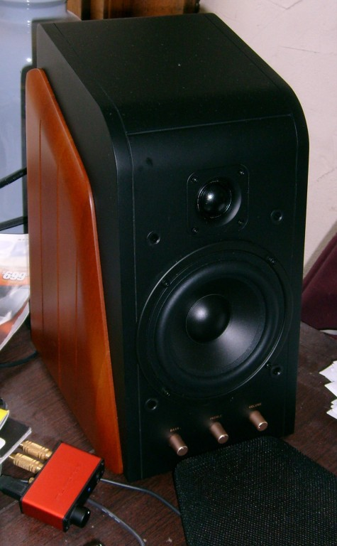

Since I bought my M-Audio AV40 speakers about a little over a year ago, I've been looking at other speakers. The Swan M200MkIII, distributed by The Audio Insider was near the top of the list. The Usher BE-718 "Tiny Dancer" is at the top of the list, being probably the best near-field speaker on the planet, but at $2795/pair, plus amp, they're a bit out of my price range. $419 plus shipping for the M200MkIII was more like what I could almost afford. They arrived on Thursday, 10 March, 2011. I unpacked them that night, and they're now sitting on my desk.
First impression is, "Wow!" Much better definition & clarity than the AV-40, and slightly better imaging. And they get A LOT LOUDER. Still in break-in, so I won't know the whole story for a week or two, but I'm very happy.
The speakers come double-boxed and individually covered with white draw-string bags. They ship with a pair of white gloves to use while unboxing, to ensure that you don't mar the surface. Not quite as beautifully packaged as Apple products, but nice enough to post some unboxing pr0n.
Click on an image for the full-resolution version.
         
The shipping box
Top of shipping box
Outer box opened
Inner box opened. Note white gloves
Speakers revealed
Contents removed from box
In place still covered
White drawstring Swan bags
Right speaker and NuForce Icon uDAC
Bare right speaker and uDAC